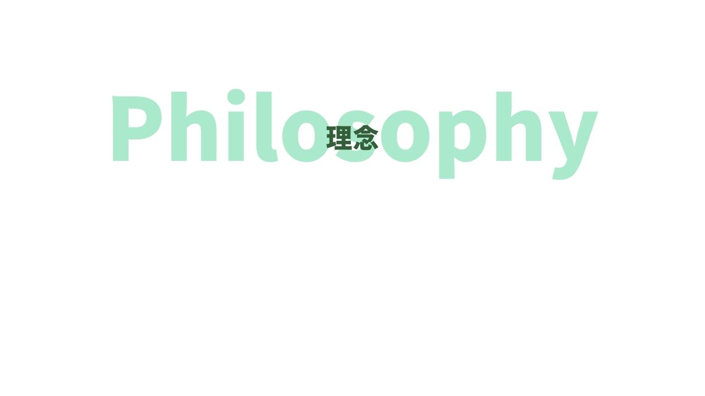
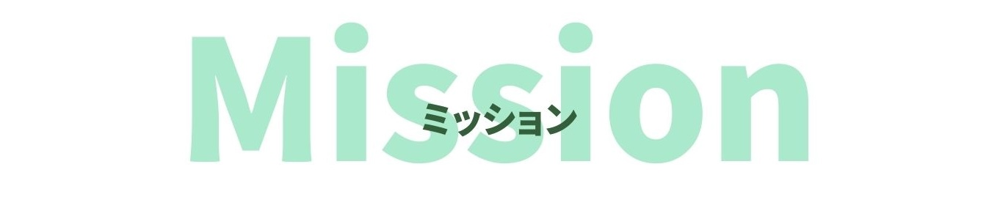
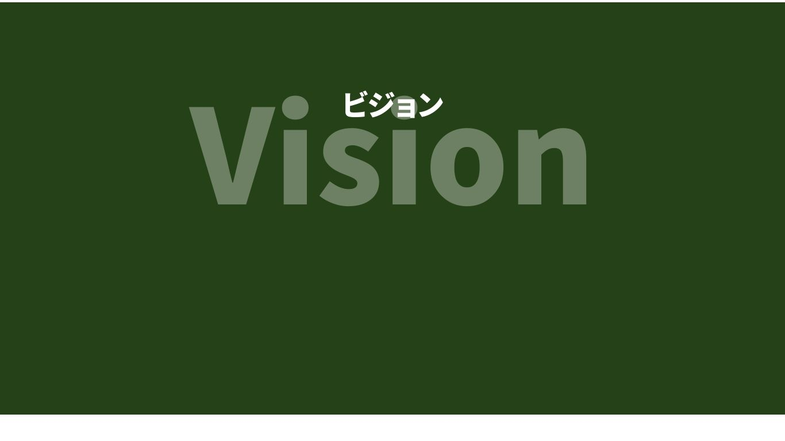

理念
現場に寄り添い、医療に集中できる環境を整える。
私たちは、クリニックで働くすべての人の声を聞き、院長が目指す医療を、経営という土台から支えます。
コンセプト
主役は、院長とスタッフと患者様 CTMは、そのすぐそばで支え続ける
CTMは、クリニックの経営・人事・財務をトータルで支える事務長代行サービスです。現場出身の強みを活かし、経営と現場、院長とスタッフ、理想と現実の橋渡しをします。「右腕」として、あらゆる声に応えながら、より良い医療の形を共に描いていきます。

ミッション
医療の質を、経営の力で支える
院長が本当にやりたい医療を実現するために、医療以外の全てを任せられる存在となり、クリニックの経営基盤を整え、チーム医療が機能する環境を創ります。

ビジョン
医師が医療に専念できる、あたりまえの職場環境をすべてのクリニックに。
経営と現場が両立し、スタッフも院長も無理なく力を発揮できるクリニックを全国に広げていきます。医療に集中できる“健全な土台”が整っている――そんな職場が「普通に存在する選択肢」となる未来をつくります。
バリュー
- “右腕”であり“理解者”である院長の想いを形にし、その一歩先を見据えて提案できる存在であり続ける
- 現場第一主義現場に出て、声を聞き、空気を感じる。すべての判断は、そこから始まる
- 全員が報われる仕組みをつくる院長・スタッフ・患者様、それぞれが「ここにいてよかった」と思える環境を整える
- 変化を恐れず、進化を支える理想の医療に近づくために、必要な変化に共に向き合う
- 経営と医療の間に立つ“翻訳者”である現場の想いと経営のリアル、両方をつなぎ、最適な形に整える